In this walkthrough, we will deploy our first web application on Azure.
Throughout the next few lessons we will use Ubuntu operating system on the hardware of our virtual machine. Eventually, we will be deploying to a Windows Server operating system. Due to the cross-platform design of .NET Core the same project will be deployable to multiple operating systems.
We have a few steps we will need to accomplish to deploy and access our application:
Before we can deploy our application to a VM, we will need to first access our Azure accounts. You should have set this up already, so go ahead and login and navigate to the main screen.
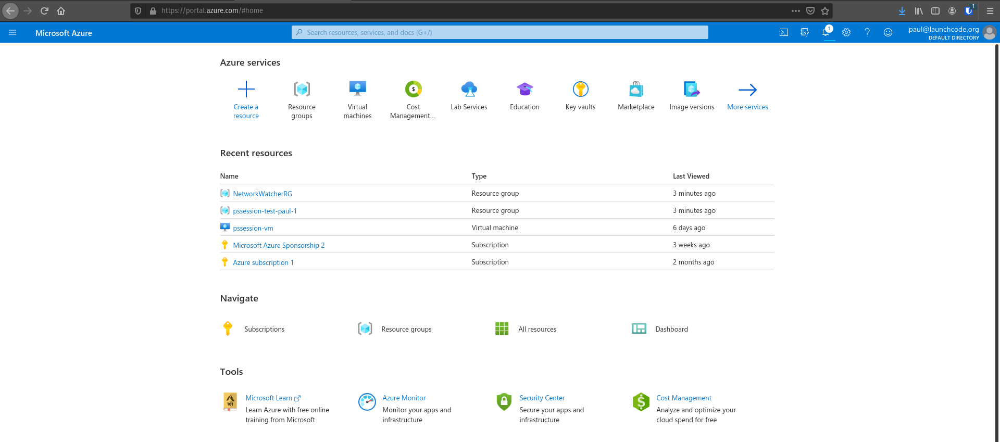A resource group is a great way of organizing your Azure resources. Since we are deploying a project for the first time, let’s create a unique resource group to contain all of the resources we will need to create for this project.
Navigate to the resource group blade by searching for “resource group” in the search bar.
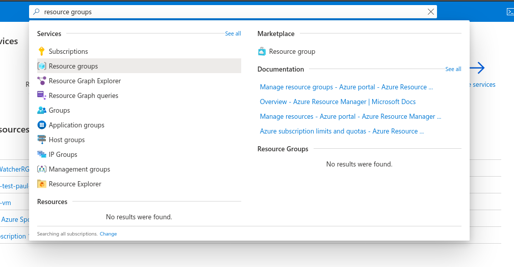From here, you will want to add a new resource group, which will provide you with a form for creating your resource group.
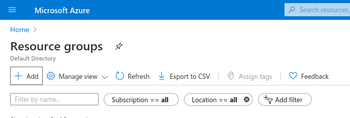Name your resource group following this pattern: your-name-lc-rg-web-api. You will need to remember this resource group name so that you can shutdown all your resources at the end of the day.
After entering your resource group name, click Review + create, and then finally the Create button on the review screen. You will be directed back to the resource group home page, and after a couple of minutes you will see your new resource group.
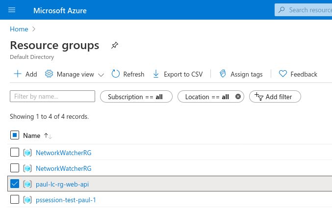Now, if you go to the resource group blade homepage you should see the new resource group with the name you entered in the list.
Now that we have a resource group to contain all of the resources we need for this project we can start spinning up the resources we will need for our deployment.
Luckily this deployment is pretty simple and will only need one Ubuntu VM.
To spin up this VM, search for the virtual machine blade in the search bar.
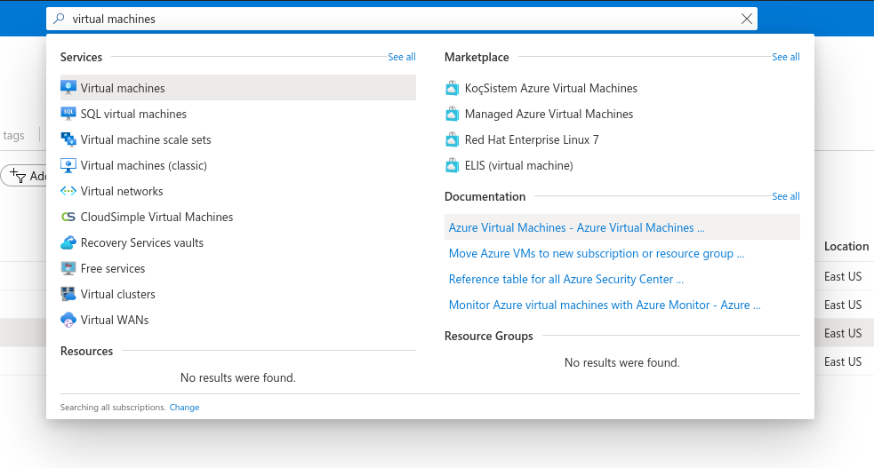Clicking this blade will take you to the home page for all your VMs. For now, it is most likely an empty list. We will change that soon.
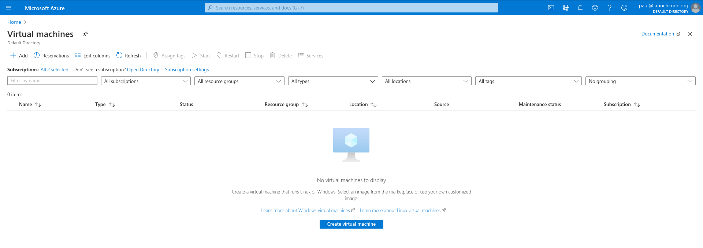We will need to create a new VM, which will require us to go through a lengthy web form. To get started, click Create virtual machine button which will take you to the first screen.
On this page we will need to fill out quite a few things, but will be sticking to defaults as much as possible.
We will need to set:
your-name-lc-rg-web-apiyour-name-lc-vm-web-apiScrolling down, you can complete the remaining fields:
LaunchCode-@zure1LaunchCode-@zure1After filling out the form, click Review + create. On the review screen, double check that you created your VM with the settings listed above, then finally click Create.
The screen after Review shows the status as your VM spins up. It will take a few minutes, but eventually your VM will be ready to work with.
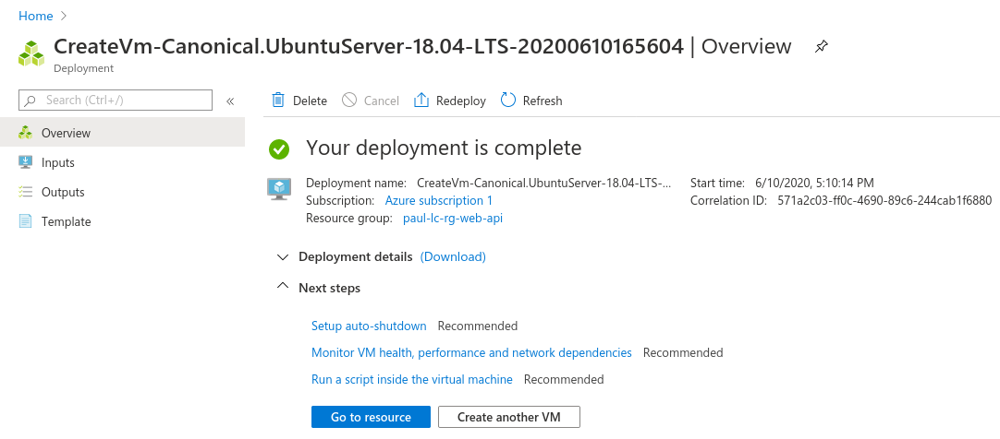After creating the VM, it will take a couple of minutes for the VM to fully provision. This takes time because Azure is doing a lot of things for us in the background. They are accessing a server at one of their many data centers in the region we selected and creating a virtual machine with the requirements we entered. Then it has to create the file structure on the virtual machine. After that, it has to configure the network so the machine is accessible to us through the internet by assigning it a public IP address. Only when all of that is done can we access our machine.
Now that we have created a VM we need to configure it so that it is ready to run our project. To configure our VM we will need to access the resource.
Navigate back to the virtual machine blade, then select the VM you just spun up by clicking on the VM’s name.
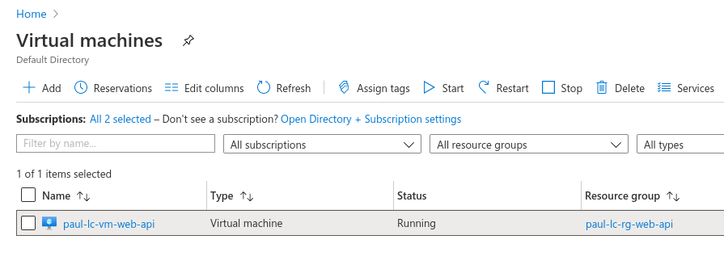Configuration can be done in many ways, and you will see a couple of them in this class. Today, we will configure our VM by sending it Bash commands through the Run Command console of the Azure Portal.
When we enter commands here they will be run as if we were in the Bash terminal of the VM.
To find the Run Command we need to look at the home page of our VM. Under operations select Run Command.
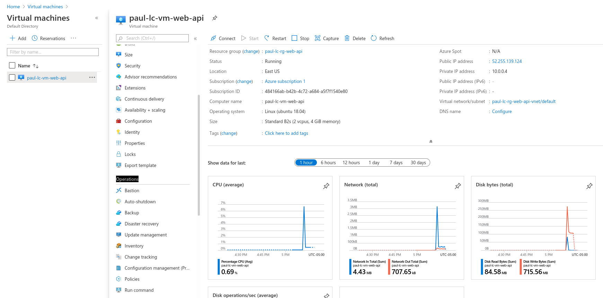From here you will be provided with a couple of options. Make sure to select RunShellScript.
From here a screen will pop out showing you a text box where we can send Bash commands to our VM.
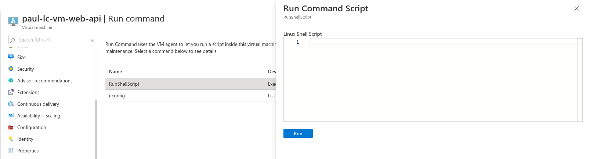We need to install the dotnet CLI onto this Ubuntu machine, which we can do by adding the following code block to the Run Command.
wget https://packages.microsoft.com/config/ubuntu/18.04/packages-microsoft-prod.deb -O packages-microsoft-prod.deb
sudo dpkg -i packages-microsoft-prod.deb
sudo apt-get update; \
sudo apt-get install -y apt-transport-https && \
sudo apt-get update && \
sudo apt-get install -y dotnet-sdk-3.1
Then hit Run to execute the Bash command on the VM. This will take a couple of minutes. When the command is done the standard output of the terminal will be displayed in the output.
You should look over the output to make sure everything installed properly. Below is a picture showing a section of the output that shows the dotnet CLI was installed and is ready to be used.
For this walkthrough we are going to deploy a starter .NET MVC web app that we will create using the dotnet CLI.
Note
In the future there will be additional configuration steps.
Our next step is to create our project. Since we installed the dotnet CLI in the previous step we can use that tool to generate a “hello world” starter project.
We will again be using the Run Command console to run our dotnet CLI commands.
export DOTNET_CLI_HOME=/home/student
export HOME=/home/student
cd /home/student
dotnet new mvc -n hello-world
The first two lines set a couple of environment variables for the Bash shell, namely DOTNET_CLI_HOME and HOME. We have to perform this step because when you run commands from the Run Command operation in the Azure Portal, the commands are always run as the root user, and not as the student user.
The root user does not have a home directory so it is not able to run the dotnet CLI.
The command cd /home/student changes the working directory to the home directory for the student.
Finally, the dotnet new mvc -n hello-world command created a new .NET MVC project named hello-world. This created a base project for us in the working directory /home/student/hello-world.
Let’s run one final command to make sure the everything worked as expected.
cd /home/student/hello-world
pwd
ls
As we can see from the output, our pwd command tells us we are in /home/student/hello-world. If the directory had not been created by the dotnet CLI then the cd command would have failed. The ls command displays the contents of the hello-world directory and confirms the project files were all created successfully.
Our source code exists and we now need to create the build artifacts from it to deploy our project. Earlier we learned about the dotnet publish command that creates the build artifacts. Let’s use that command now.
export DOTNET_CLI_HOME=/home/student
export HOME=/home/student
cd /home/student/hello-world
dotnet publish -c Release -r linux-x64 -p:PublishSingleFile=true
This will publish to /home/student/hello-world/bin/Release/netcoreapp3.1/linux-x64/publish/.
We can look into this folder with ls.
ls /home/student/hello-world/bin/Release/netcoreapp3.1/linux-x64/publish/
The publish directory has our build artifacts and we have everything we need to deploy.
Before we deploy our build artifacts we will need to create a new inbound and outbound Network Security Group (NSG) rule to allow inbound and outbound traffic to our machine. Our app will be listening on port 80 in the Server so we will need to open that port.
In the Azure VM page look for the Networking tab of the Setting sections.
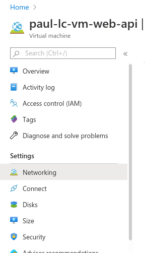When looking at the networking section of your VM the inbound rules are listed by default. A few were created automatically for you, we won’t be touching these, but will be creating a new inbound rule for port 80.
Click the Add inbound port rule button to create a new rule.
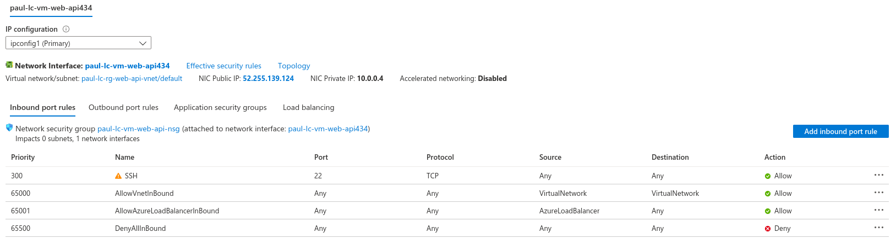This brings up a box that allows you to quickly and easily create a new rule. We will be changing the port to 80, and giving it a name, web-app-inbound.
After entering the port and the name, click the Add button. It will take a few seconds for the rule to be created. While it’s spinning up, let’s create the outbound rule too. Click the Outbound port rules tab, and then the Add outbound port rule button to bring up the outbound rule form. Again fill in port 80 and the name web-app-outbound.
Click the Add button to create this outbound rule. After a few seconds you should see the new rules in their respective areas.
Double check both the inbound and outbound port rules. If these are not configured correctly you won’t be able access your web app from your browser.
Tip
Misconfiguring a Network Security Group is a common error when deploying applications and should be one of the first things you check if you receive a connection timeout when attempting to connect to your deployed app.
We will deploy our project using the executable artifact created by our publishing step. However, we want this project to run on port 80 (the default HTTP port), not the .NET default port of 5000. We are going to set an environment variable to override the .NET default port when we run our executable.
cd /home/student/hello-world
ASPNETCORE_URLS="http://*:80" ./bin/Release/netcoreapp3.1/linux-x64/publish/hello-world
This command is a little different. Traditionally when you run an executable .NET project, the terminal attaches itself to the process as the project runs. Since it does this, you won’t see anything in the output section, and it will appear to be frozen like in the following picture.
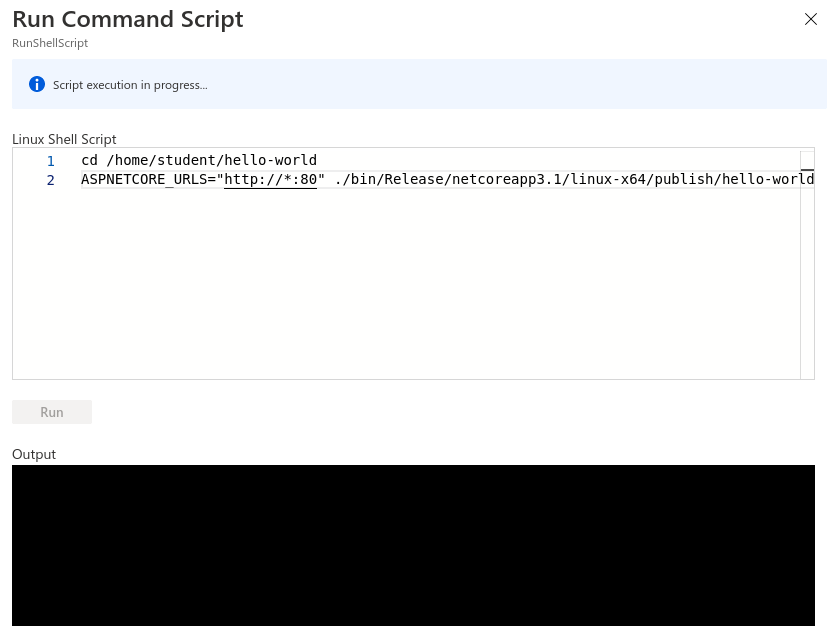Note
The reason it appears to be frozen is because the Azure Portal Run Command can only display information once it gets a response from the terminal on the VM that ran our command. Since that terminal is attached to the process associated with our project, and our project runs until it crashes, it will not send a response back to the Azure Portal Run Command window.
As a final step, we will be connecting to our running web app in our browser. To do this, we will need the public IP address of our VM. You can find this in the overview section of the VM view:
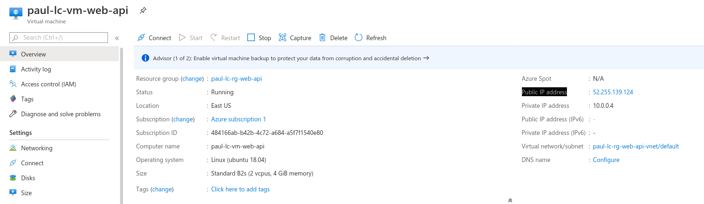In your browser, navigate to the public IP address found in the overview section of your VM and you should see the deployed application.
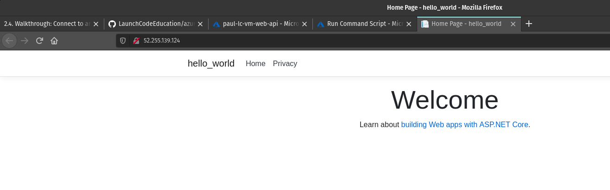The hello-world app we created on the VM is running and we can connect to it from a browser using it’s public IP address!
Note
Our Network Security Group rules allow traffic from any IP address. This means that anyone can connect to it if they know the public IP of the machine.
For this first deployment we are doing things in a less-than-ideal way. We have been using the Azure Portal Run Command which isn’t very flexible. We will learn about more robust ways to deploy applications later in the class.
We will continue to develop our troubleshooting strategy in tandem with learning other deployment mechanisms. Troubleshooting is a very important skill in Operations, and it’s a good idea to start taking note of what things trip you up when deploying.
For today, if you run into errors when following this guide, the best advice is to throw everything you’ve done away and start over. Fortunately this can be done quickly by deleting the Resource Group and starting again from the top of this article.
After you have completed this walkthrough and connected to your deployed application, you will want to delete your resource group. Running a VM costs money and by removing unused resources you can preserve your subscription credits.